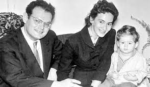
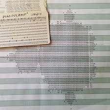
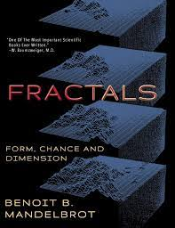

Career Timeline
1. Centre National de la Recherche Scientifique
Mandelbrot was a staff member of the Centre for 9 years (1949-1958). In this period, he also was sponsored by Jon von Neumann at the Institue for Advanced Study in Princeton.
2. Married and moved
He married Aliette Kagan in 1955. They moved to Geneva and then later to the Université Lille Nord de France.
3. IBM
Mandelbrot moved finally to the United States and began researching for IBM in 1958. He worked there for 35 years.
4. Research
From the 1980s onward, Mandelbrot published a variety of papers in fields including but far from limited to mathematics. His works contributed to statistical physics, meteorology, hydrology, geomorphology, anatomy, taxonomy, neurology, linguistics, information technology, computer graphics, economics, geology, medicine, physical cosmology, engineering, chaos theory, econophysics, metallurgy, and the social sciences.
